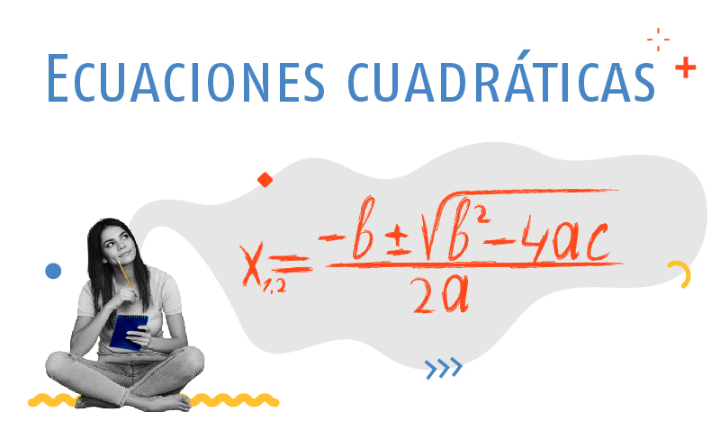
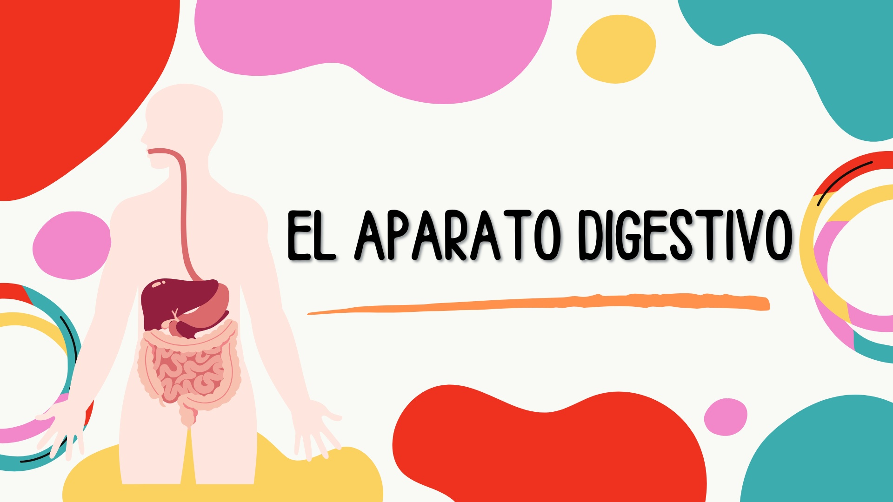
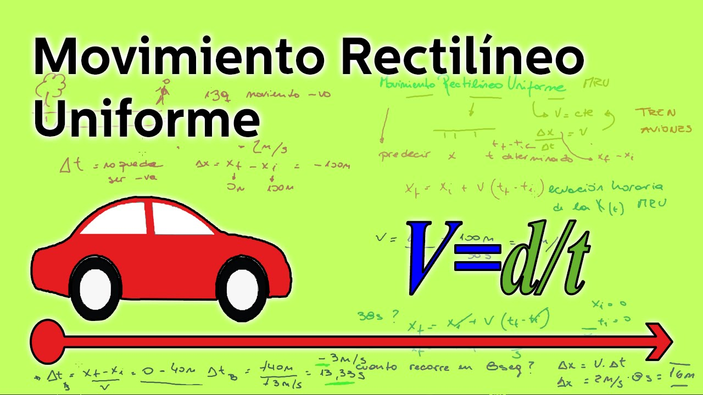
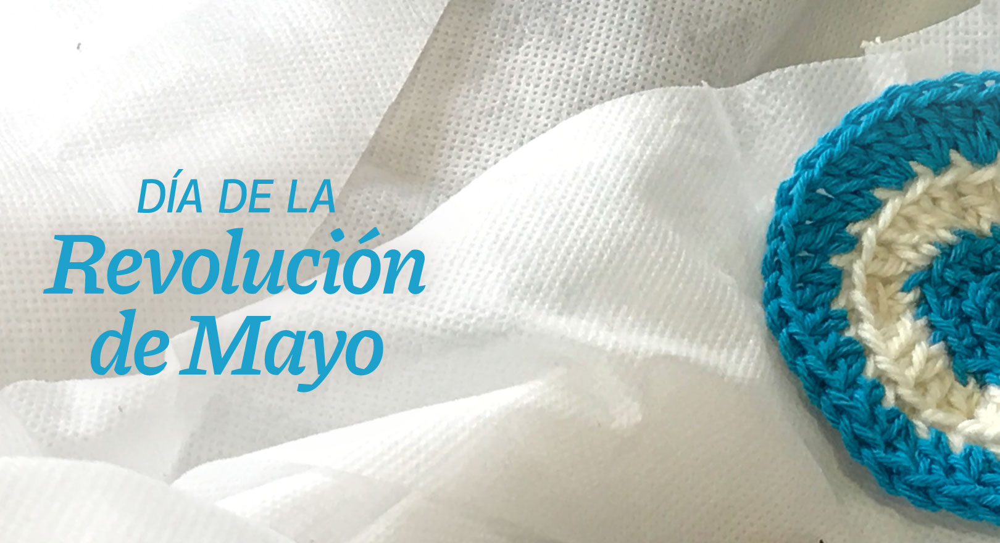

Ecuaciones cuadráticas

Estudio de pendientes, gráficos y ecuaciones.
Categoría: Matemática
Año: 2025
Estado: Finalizado
Ver detalleExplorador de proyectos

Estudio de pendientes, gráficos y ecuaciones.
Categoría: Matemática
Año: 2025
Estado: Finalizado
Ver detalle
Estudio de los órganos y procesos encargados de la digestión de los alimentos en el cuerpo humano.
Categoría: Biología
Año: 2026
Estado: En curso
Ver detalleCreación de un sitio web utilizando HTML para organizar y mostrar información educativa.
Categoría: Programación
Año: 2026
Estado: En Curso
Ver detalle
Análisis del movimiento de un objeto con velocidad constante en línea recta.
Categoría: Física
Año: 2026
Estado: Finalizado
Ver detalle
Investigación de los acontecimientos históricos ocurridos en mayo de 1810 en Argentina.
Categoría: Historia
Año: 2025
Estado: En Curso
Ver detalle